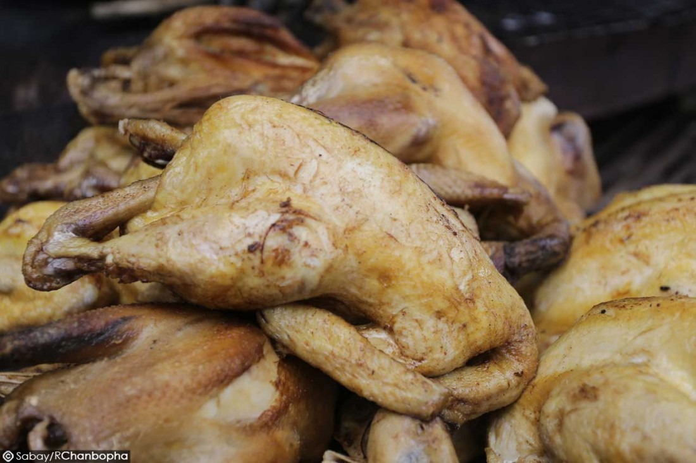
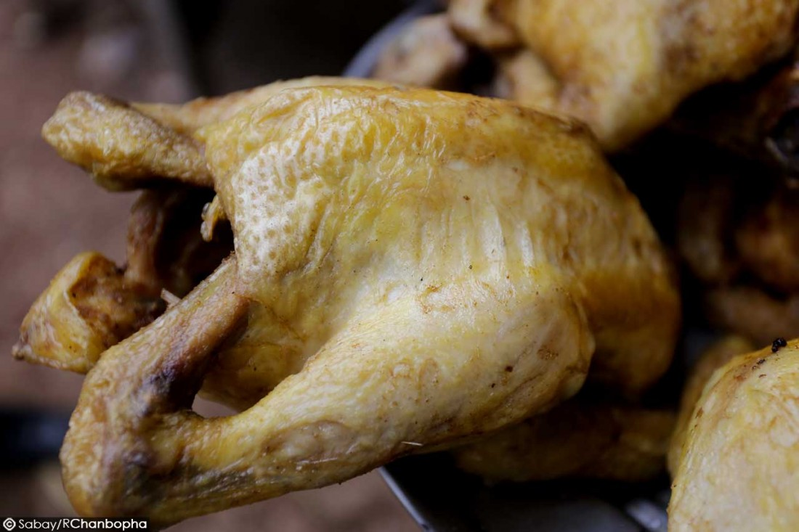
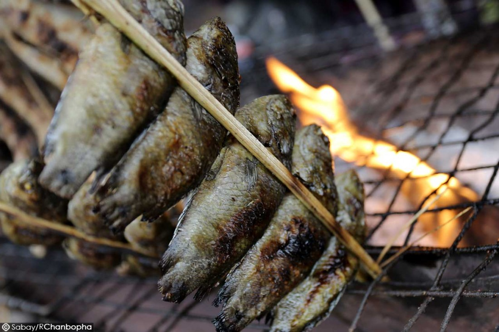
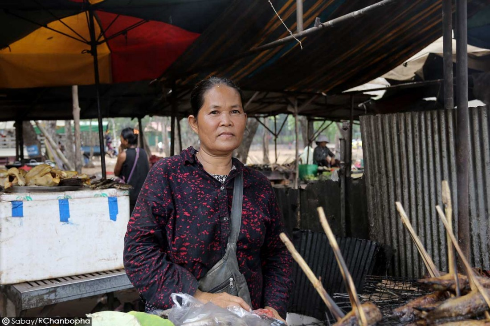
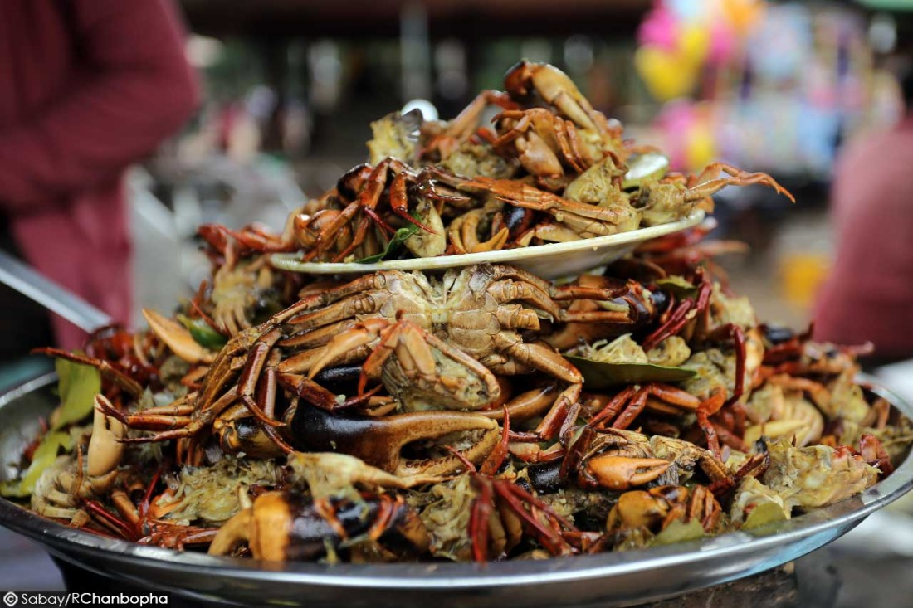

សូមស្វាគមន៍មកកាន់តំបន់ទេសចរណ៍កម្ពុជា
ប្រជាពលរដ្ឋមួយចំនួន ដែលធ្លាប់បានធ្វើដំណើរកម្សាន្តទៅលេងភ្នំឧត្តុង្គបានទទួលស្គាល់ថា រមណីយដ្ឋានមួយនេះសម្បូររបស់ហូបចុក និង វត្ថុអនុស្សាវរីយ៍ ដែលមានតម្លៃសមរម្យអាចទទួលបាន។
កញ្ញា កាកា ដែលធ្លាប់បានទៅលេងភ្នំឧត្តុង្គ កាលពីចុងសប្ដាហ៍មុន បាននិយាយប្រាប់គេហទំព័រ Sabay ថា នៅថ្ងៃចុងសប្ដាហ៍ទំនេរពីការងារ គឺមិត្តភ័ក្ដិ ក៏ដូចជា ក្រុមគ្រួសារ រមែងបង្កើតកម្មវិធីជួបជុំគ្នាទៅកាន់តំបន់រមណីយដ្ឋានផ្សេងៗ ដើម្បីលំហែកាយ។ ក្នុងចំណោមរមណីយដ្ឋានដែលធ្លាប់ទៅលេង គឺ ភ្នំឧដុង្គ ជាតំបន់មួយមានទេសភាពស្រស់ស្អាត ហើយសម្បូររបស់ហូប និង វត្ថុអនុស្សាវរីយ៍ជាច្រើន ដែលមានតម្លៃសមរម្យ។
លោក រីទ្ធ អ្នករស់នៅក្នុងរាជធានីភ្នំពេញ ដែលបានទៅទស្សនា និង កម្សាន្តនៅរមណីយដ្ឋានប្រវត្តិសាស្ត្រភ្នំឧត្តុង្គ បានបញ្ចេញទស្សនៈដែរថា រមណីយដ្ឋានមួយនេះ មានទីកន្លែងបែ្លកៗ និង សម្រាប់សក្ការបូជា មានកន្លែងសម្រាប់ អង្គុយលំហែមើលទេសភាពដ៏ស្រស់ស្អាតពីលើកំពូលភ្នំ និង មានម្ហូបចំណីលក់ ជូនភ្ញៀវដែលបាន ទៅកម្សាន្តនៅទីនេះ។ អ្វីដែលកាន់តែចាប់អារម្មណ៍នោះគឺថា នៅម្ហូបអាហារនៅទីនេះសម្បូរ និង មានតម្លៃសមរម្យ។
អ្នកស្រី សូ ស្រី អ្នកលក់ដូរនៅរមណីយដ្ឋានភ្នំឧត្តុង្គ បាននិយាយប្រាប់ក្រុមការងារ "ផ្លូវទៅស្រុក" ថា ប្រសិនបើនៅរដូវបុណ្យទានធំៗ គឺលក់មាន់ដាច់ខ្លាំង ចន្លោះពី ៤០-៥០ មាន់។ ហើយរមណីយដ្ឋានមួយនេះសម្បូរខ្មែរមករកម្ហូបអាហារ ប៉ុន្តែ ប្រសិនបើភ្ញៀវបរទេសគេព្យាយាមចង់ដឹងអំពីប្រវត្តិសាស្ត្រច្រើនជាងចង់ទិញម្ហូបញុំា។
ហូបអាហារនៅទីនេះសម្បូរក៏សម្បូរ ធូរថ្លៃក៏ធូរថ្លៃ លក់ក្នុងតម្លៃសមរម្យដោយតម្លៃត្រីអណ្ដែងថ្លៃ ៤ ០០០ ទៅ ៥ ០០០រៀល នៅពេលមានបុណ្យទាន ឯមាន់វិញតម្លៃ ២០ ០០០រៀល ទៅ ២៥ ០០០រៀល ហើយបើមាន់ស្រែតម្លៃ ជាង ៣ម៉ឺនរៀល។ នេះជាការលើកឡើងបន្ថែមពី អ្នកស្រី សូ ស្រី។
ភ្នំឧដុង្គមានចម្ងាយប្រមាណ ៤០ គីឡូម៉ែត្រពីភាគពាយព្យនៃរាជធានីភ្នំពេញ។ ភ្នំឧដុង្គជាអតីតរាជធានីនាសតវត្សទី ១៧ (ពីឆ្នាំ១៦១៨ ដល់ឆ្នាំ ១៨៦៦) ហើយត្រូវបានបោះបង់ចោលដោយព្រះបាទនរោត្តម នៅឆ្នាំ ១៩៦៦ ដោយផ្លាស់រាជធានីទៅកាន់រាជធានីភ្នំពេញរហូតដល់សព្វថ្ងៃ។ ទីកន្លែងនេះមានការទាក់ទាញជាថ្មី បន្ទាប់ពីការកសាង ព្រះសក្យមុនីចេតិយដ៏ធំនៅលើកំពូលភ្នំឧដុង្គជ្រុងខាងជើង ដែលមើលទៅឃើញធំខ្ពស់ និង មានភាពស្រស់បំព្រង។ ភ្នំឧដុង្គស្ថិតនៅក្នុងឃុំផ្សារដែក និង ឃុំភ្នំបាត ស្រុកពញាឮ ខេត្តកណ្ដាល។ ភ្នំនេះមានឈ្មោះបីគឺ ភ្នំឧដុង្គ ភ្នំព្រះរាជទ្រព្យ និងភ្នំអដ្ឋរស្ស៕

© រក្សាសិទ្ធិគ្រប់យ៉ាងដោយ Visit Cambodia tours ឆ្នាំ២០១៨
អាសយដ្ឋាន
អគារលេខ ៣០៨ មហាវិថីព្រះមុន្នីវង្ស
សង្កាត់បឹងរាំង ខណ្ឌដូនពេញ
Visit Cambodia tours ជាគេហទំព័រ សម្រាប់ធ្វើការស្វែងរកកន្លែងកម្សាន្ត និង បញ្ជាក់បន្ថែមនៅពត័មានរបស់ខេត្ត។